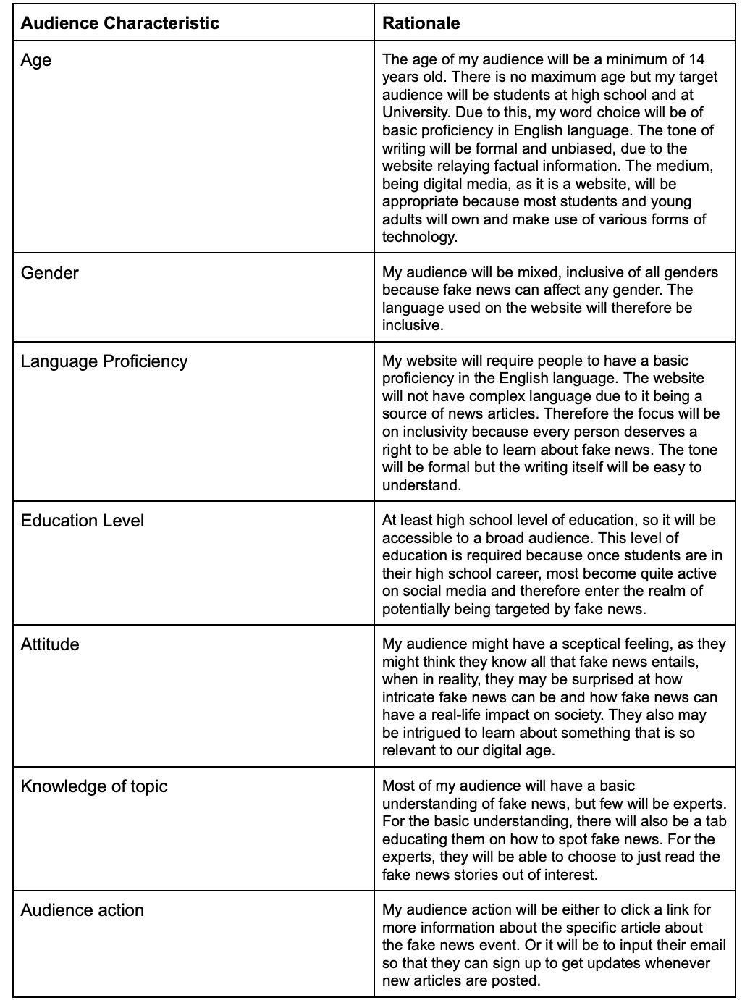
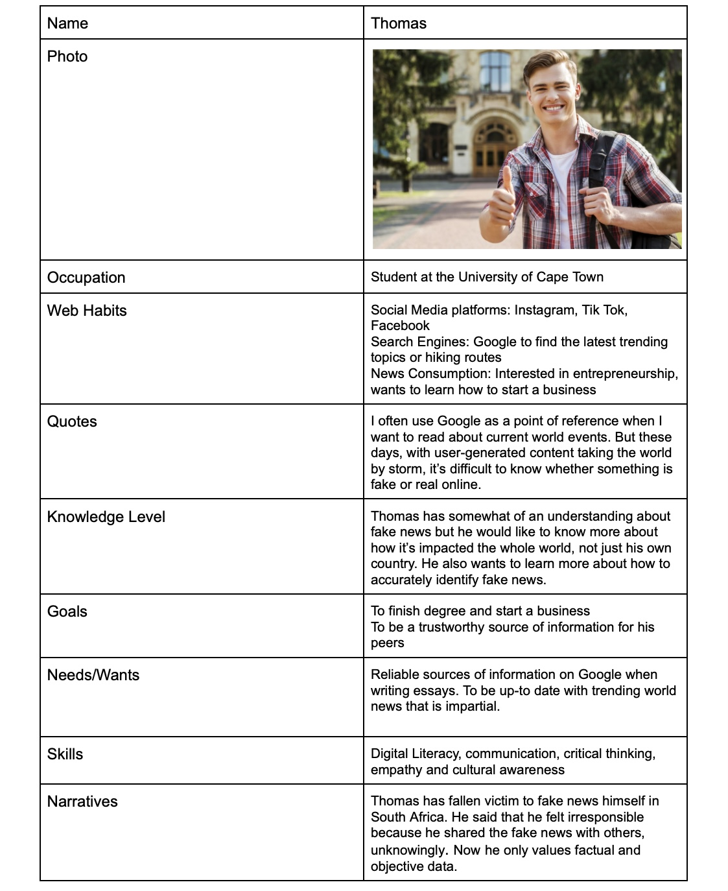
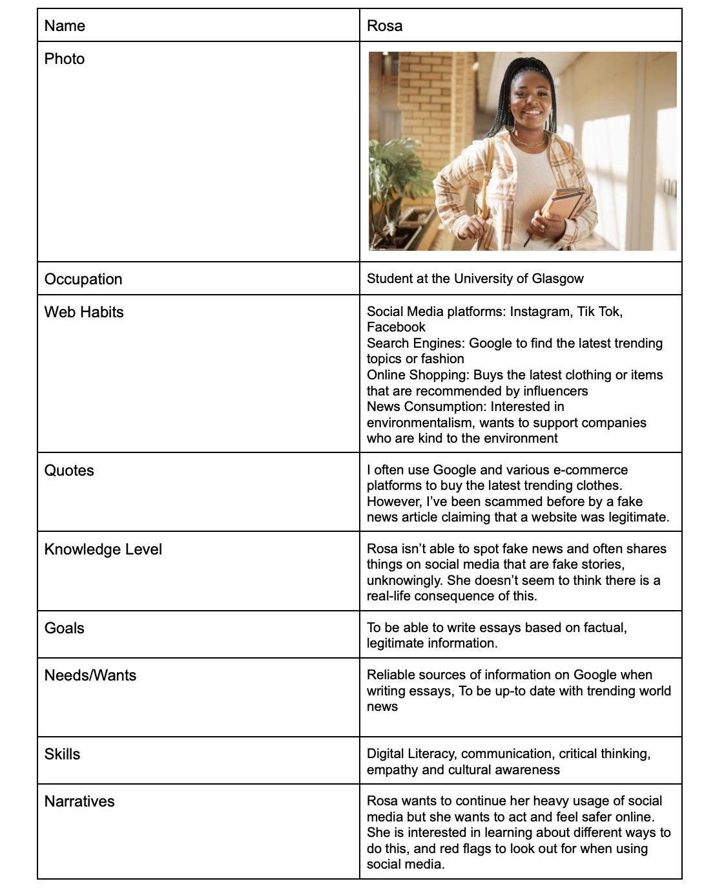
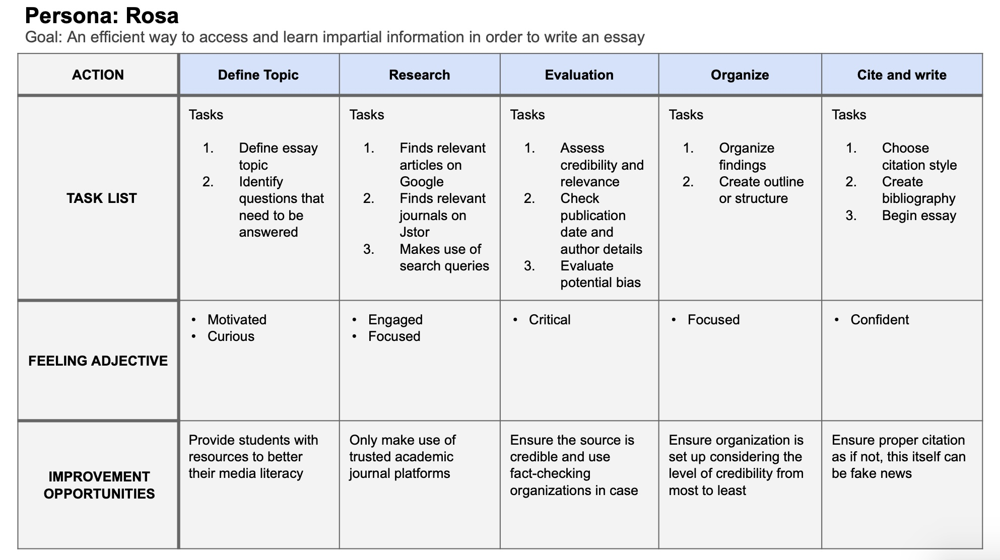
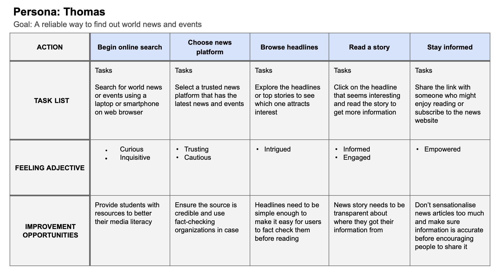

Week Two's IL Tasks: Audience Research
Task 1: Identifying my audience
Considerations:
- Particular Audiences: I think that my topic does lend itself to a particular audience, being students consisting of high schoolers and university students. This is my target audience because teenagers and young adults are often users of social media platforms and are at the prime of their information consumption and learning. Not only are they the heavier users of social media when comparing them to people past their young adult phase, they are also very much at risk of falling victim to fake news if they are not educated enough on the topic. This audience makes up a large demographic of the world population so it is important to focus on educating them on all matters of life.
- Broad / Narrow: Although my focus will be on a specific audience, it is an audience that takes up a big part of the demographic in society, in this sense the focus is narrow but accessible to a lot of people. However, this topic is relevant to anyone, even those who aren't students, so it is also very accessible to a broad audience too.
- Pre-existing Expectations: It is hard not to have pre-existing expectations about fake news in our society. I think that the audience will be shocked once they learn about the extreme impacts fake news can actually cause though. The audience might expect to know more than they actually do on the topic too.
- Regular Access: I will have access to be able to perform user testing as my target audience consists of peers and friends of mine that I can make use of.

Task 2: Audience Persona's
I created persona's based on my target audience below:


Task 3: Audience needs in relation to design


Task 4: Reflective Statement
I chose my audience because they fit into the student category. They both had experienced coming across fake news at some point in their lives and both needed to use social media or Google to find information online. The design needs seem to create importance around referencing where information was retrieved from in an accurate manner, a simple and clear layout of the website with no sensationalism, to become a reputable and well-trusted website and to ensure that information on the website is only gathered from reputable sources so that they do not need to spend tons of time fact-checking everything.